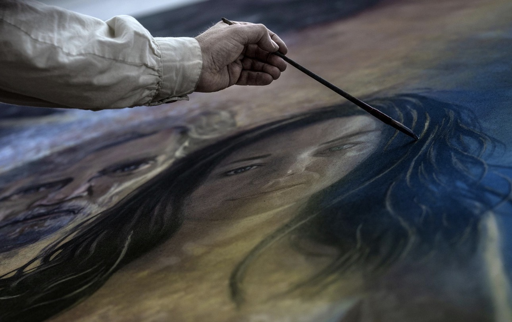
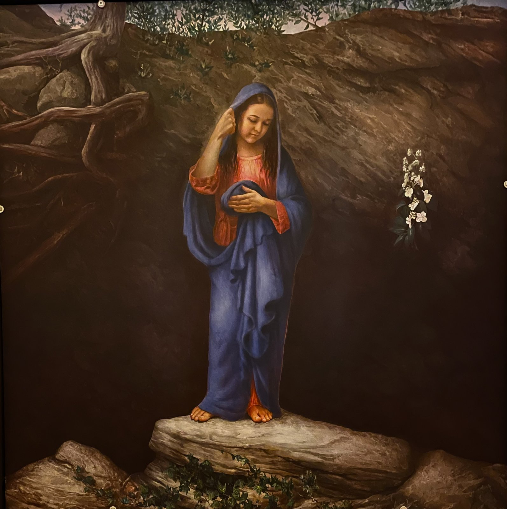
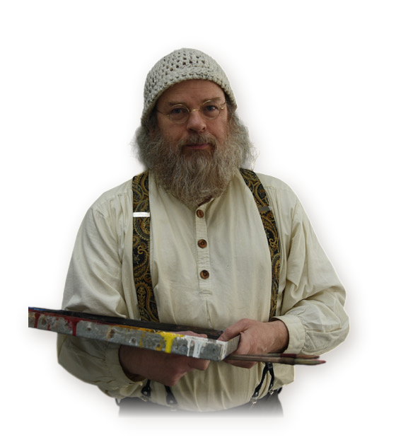
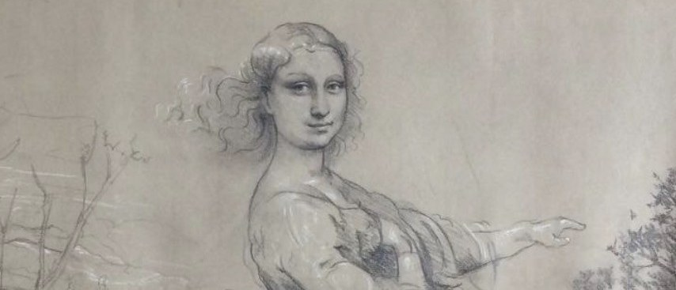
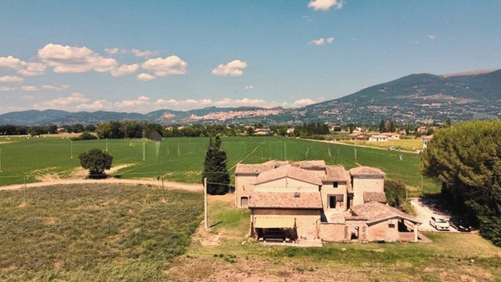
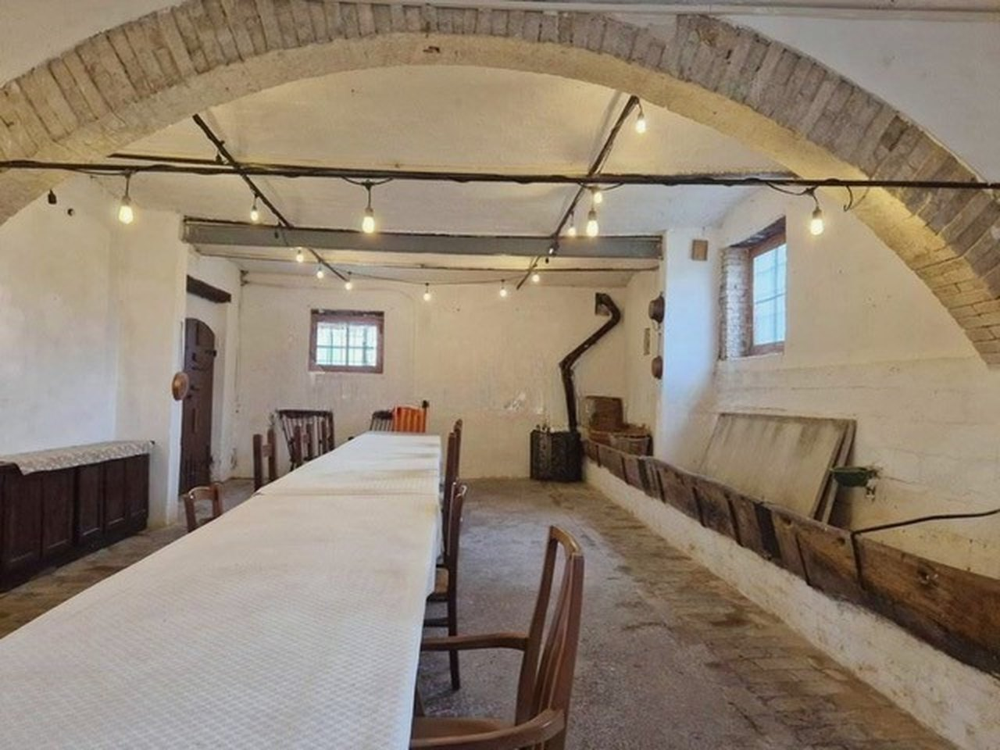
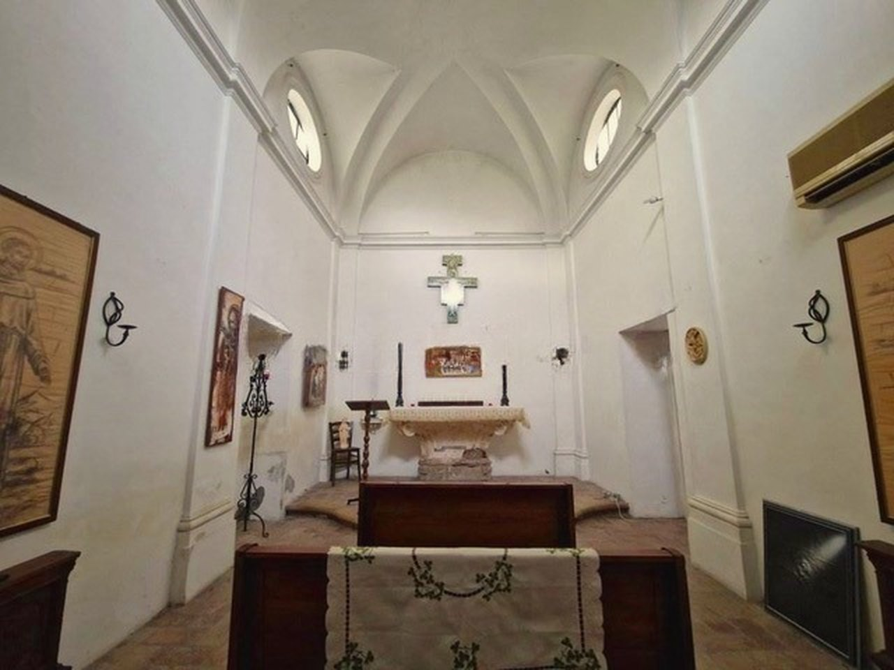
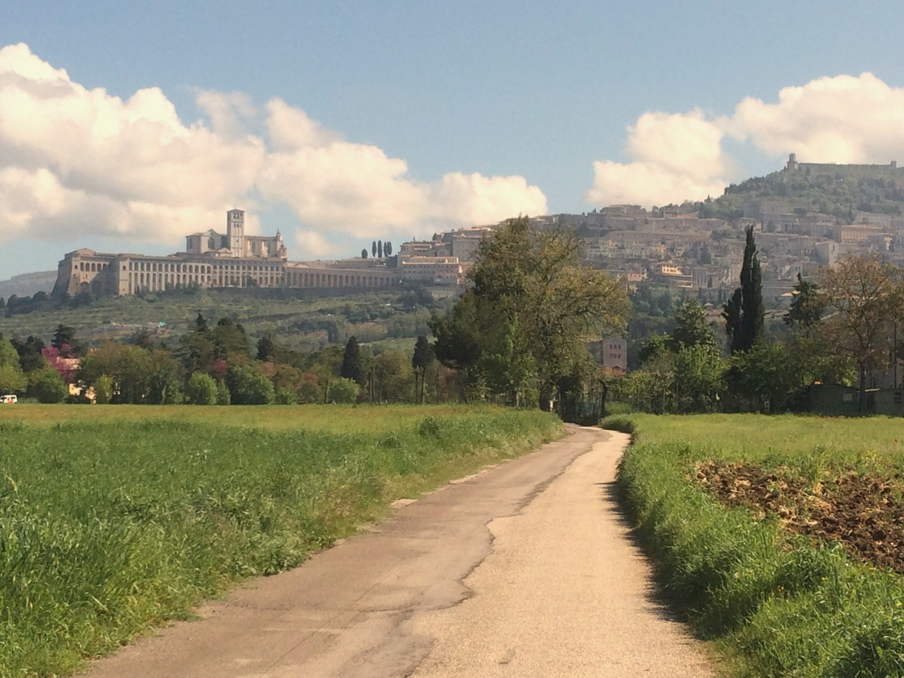

Imitatio · Scuola d’Arte Sacra · Assisi, Italy
A sacred art school in Assisi, Italy. It will be a restorative place for painters, writers, and creatives in quiet retreat with community.
Explore La ScuolaMark Balma at work
Art is learned by seeing. Mastery is learned by doing.


MARK BALMA is an artist formed in the tradition of the Old Masters, with a lifetime devoted to sacred painting. Now, in the foothills of Assisi, he opens his studio to a new generation.

Learn to see what others pass by.
Create. Rest. Pray. Belong.
A villa in the fields below Assisi: the bottega by day, one shared table in the vaulted refectory, and La Cappella for prayer.
In Mark’s words: “It will be a restorative place for painters, writers etc. a quiet retreat with community.”




Work beside the maestro in his own studio in Assisi. Drawing, tempera, oil and the ancient art of buon fresco, taught by Mark Balma at the easel and the wall, as the Old Masters taught in the bottega.
6 weeks
The full season: time to carry a buon fresco from drawing to cartoon to wet plaster.
3 weeks
The first or second half of a season.
Nightly stays
Rest in the foothills of Assisi, where the villa becomes a quiet haven for prayer and retreat. Write to us for availability.
A season to study deeply, create faithfully, and rediscover the beauty of a life devoted to art.
Apply or Join the Waiting List